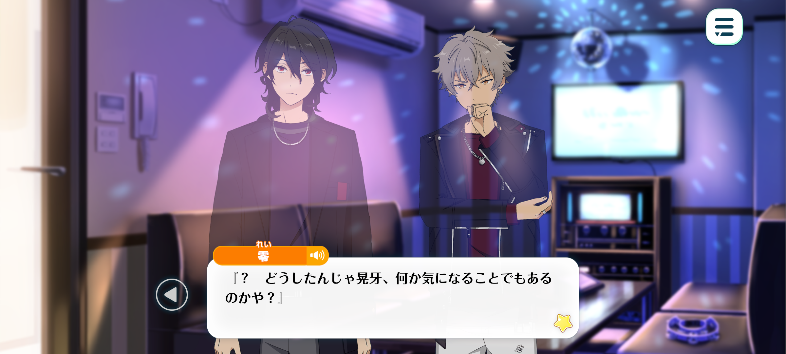
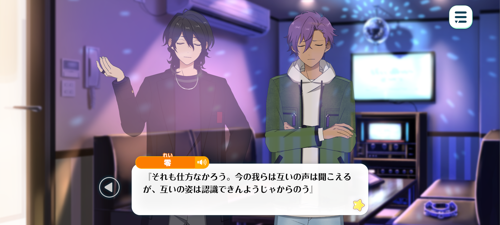

BIOHAZARD — Chapter 9



Koga:(Hm~...?)
Rei: (? What's the matter, Koga? Is something troubling you?)
Koga: (Nah, jus’ thinkin’ about Adonis. At this point in the timeline, he and the rest of us barely had anything to do with each other, right?)
Rei: (I was his closest confidant, after all. I was the one who introduced you two, and before long, you were taking lessons together and spending time with one another.)
Koga: (Yeah. But it wasn't until much later that it really got going—or became a regular thing, I guess... That was after he officially became one of us, wasn't it?)
(Basically when Deadmanz was rebirthed ‘n became UNDEAD.)
(Adonis was so damn hesitant back then. Unless I kept pestering him to come, he wouldn't even show up for lessons.)
Rei: (Despite his rather intimidating appearance, he's surprisingly shy. Especially back then.)
(But once he opens his heart to someone, he becomes quite attached to them. It's rather endearing, really. And the same could be said of you two, couldn't it, Kaoru-kun? Koga? ♪)
Koga: (Haa? Who’s wagging their tail now, hM?)
Kaoru: (Ahaha. But seriously, I am curious where Adonis-kun is. Things are so confusing right now, so it'd be nice if we could meet up with him.)
Koga: (Hng~! Hnnngggg~! This blows! We can’t even get away from our past selves. Lookin’ for Adonis is gonna be difficu—)
Adonis: (That won’t be necessary.)
(I’m right here.)
Kaoru: (Gahh, is that you Adonis-kun!?)
(You startled me... If you're here, you could've said something, you know?)

Adonis: (I'm sorry. I was completely confused myself and had no idea what was happening until I heard everyone's voices and figured out the situation.)
Rei: (That's understandable. It seems we can hear one another's voices, but not see one another.)
(Even if you're here with us, we wouldn't know of your presence unless you spoke up.)
Adonis: (Yes. I’m not much of a talker, therefore I am at a bit of a disadvantage. I’m having a bit of a difficult time with what’s happening.)
Koga: (Anyway. We’re talkin’ like this is the most normal thing ever but, why are you here, Adonis?)
Adonis: (Like in a philosophical sense?)
Koga: (Noo, not like that! I could be wrong but I think we can only exist if our physical selves are nearby? Grrra, talkin’ like this ‘bout myself is hella confusin’!)
Kaoru: (I think we’re going crazy… So, basically, if Adonis-kun is here, that means his past self must be somewhere nearby, right?)
(Isn’t that weird, though? We didn’t even know each other back then?)
Adonis: (That's something I found strange as well.)
(I don't know why, but Sakuma-senpai attacked me earlier.)
Rei: (Eh? Why do I keep attacking people?)
Adonis: (It wasn’t you, ‘wagahai’ Sakuma-senpai, but ‘oresama’ Sakuma-senpai.)[1]
Rei: (That's certainly an easy way to tell us apart, but I don't think I referred to myself as “oresama” all that often back then.)
(I wonder where that impression came from. I'm quite sure it's Koga's fault.[2])
(Since Koga was copying me at that time, people seem to assume I spoke in that manner as well–)
Koga: (Haa? What, so you’re sayin’ it’s all my fault?)
Rei: (Not exactly, no… However, this is rather peculiar.)
(The four of us in UNDEAD, who had so little to do with one another back then, have all gathered here at this particular point in time. I can't recall anything of the sort ever happening before.)
(What could have caused these discrepancies in our memories? And what might they signify?)
Adonis: (If Sakuma-senpai doesn’t understand, there’s no hope for the rest of us.)
Rei: (I'm hardly an omniscient, omnipotent god, you know... Now, do be quiet for a moment. It seems our past selves are up to something.)
Haha. My bad for tellin’ you guys to come out here, but everythin’s already been sorted.
This guy's the ringleader behind this whole “vampire incident”.
Adonis: …
Keito: You’re… Otogari, right? ‘Vampire’? What are you talking about?
Rei: (What on earth am I talking about?)
Adonis: (I have no idea.)
(I do remember that some sort of troublesome incident happened around this point in the timeline. I don't know what this “vampire” business refers to, though—)
(Wasn't that incident the catalyst for us becoming UNDEAD?)
Rei: (Ah, now that you mention it... That's right. I remember now. How nostalgic.)
(This was the final incident involving Deadmanz, and the very first one involving UNDEAD.)
- Current rei uses the personal pronoun wagahai (我輩) and old rei, you know the one in deadmanz used ore (俺). The rei that supposedly attacked adonis used oresama (俺様)
- current koga uses oresama